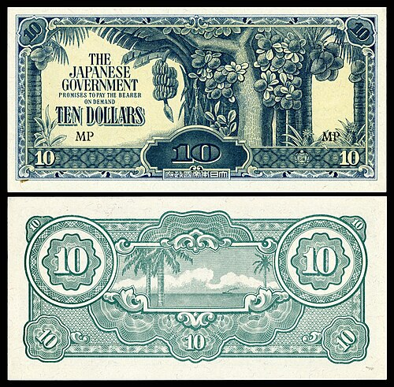

Banana Money: The Illusion of Wealth in Syonan-to
Ever been a kid and wondered why the government can't just solve poverty by printing more money? Banana money reflects a classic example of hyperinflation, illustrating the consequences of excessive currency printing.

It’s 1942. In the span of a year, life as I once knew has completely changed. I had to watch my homeland fall under Japanese Occupation. A new flag now hangs over the streets, Singapore has been renamed Syonan-to, and this uneasy grey atmosphere of fear follows wherever I go.
Almost immediately after, in an attempt to establish economic control, the Japanese introduced their own currency to replace British Malayan currency, officially termed the Japanese Government-issued dollar and nicknamed “Banana Money” because of the banana tree motif printed on the notes.
And quick enough, I suddenly find myself holding an abundance of notes, more than I’ve ever had before. I feel, for a brief moment, like the richest I’ve ever been. But that sense of “wealth” quickly dissipates as prices surge everywhere and basic necessities become increasingly difficult to obtain.
So, despite the Japanese military’s rapid expansion across multiple nations and its record of widespread atrocities, it still managed to overlook fundamental economic principles.

What happened? Banana Money was issued in large denominations without proper backing, leading to rampant hyperinflation. As the occupation progressed, excessive printing coupled with the rise of counterfeit money due to the lack of serial numbers on the notes diminished the currency’s value.
Businessman Chua Eng Cheow recalled that when the banana notes were first introduced, the value was on par with the Straits dollar. Pre-war an egg cost 3 cents, but at the end the Occupation it was $100. A kati (600 g) of pork went from 30 cents to $1,500.
With money now rendered almost worthless and trade systems breaking down everywhere, essential goods like rice, sugar, and salt are becoming increasingly scarce. What is available is often hoarded and resold at exorbitant prices. Turning to the black market becomes necessary just to obtain basic essentials, think medicine, tinned milk for infants, or more nutritious food for the sick.
Barter trade begins to replace the use of currency in everyday exchange, with people exchanging goods and services directly. Some even resort to quietly using pre-war Straits currency, or trading in gold and jewellery that has reappeared in the black market in place of the banana currency. But as currency continues to lose all meaning, even those who once hoarded supplies start to let them go, trading away their stockpiles in exchange for necessities they can no longer live without.
However, the current economic plight cannot even be solely blamed on the Japanese or greed. Even now, though the British propaganda has been remarkably strong in convincing many that the outbreak of World War II in Europe in 1939 will not reach Singapore, among the more far-sighted people I know, rampant hoarding has already begun, as they quietly stockpile essential goods in anticipation of what could become an even more difficult time ahead. Every man for themselves indeed.
But I am slightly comforted in my situation and put aside self-pity as I realise the relatively wealthier are also pissing their pants at this hyperinflation-hoarding-esque situation. Word goes around they are turning to asset hoarding, shifting their wealth into gold and jewellery, or converting fixed assets like property and land into gold or Straits dollars, which they keep carefully hidden until they need to use them.
With such a wide open secret of a loophole in the system, it was a no-brainer that the corrupt officials part of the Syonan administration allowed for it, as they themselves were hoarding and trading on the black market for personal gain.
Though it is clear that the Japanese are aware of, and even participating in, the black market. It was still dangerous and sacred territory. Whenever I manage to secure some rarity of food or medicines, it is second nature to carefully hide it otherwise a bunch of questions would come my way and trouble will be right at my doorstep.
And pro tip, beware to not become an enemy of public server as, cross your neighbour off, and your nasty, desperate neighbour might tattle on you about your sudden lavish food consumption or your unexplained availability of scarce medicine. Next thing you know, the dreaded headache of the Kempeitai pays you a visit after you see them drop off a bundle of cash and a bag of rice at your ugly loud-mouth of a neighbour’s doorstep.
If I have a gun pointed to my head and I am forced to cough up a silver lining from the war, and I manage to scratch my brain hard enough, one of my few possible answers might be the new job opportunities that even modern day AI wouldn’t be able to steal. The surreptitious nature of the black market allows for “runners”, or people who collect commissions by connecting buyers with sellers.
Anything of value, maybe a bundle of carrots or stretching as far as a gold bracelet, I’d first ask around in my circle whether anyone is interested. A “runner” may agree to help me sell it, and from there, the information spreads from person to person through their own contacts. Soon enough, what starts as a private arrangement between a few people can reach many others, until a buyer is eventually found.
Upon writing this, i think Singaporeans are quite cool because our forefathers are so tuff because u realise how though many of them had low level education and poor standards of living back then, they were still so ambitious and innovative in finding new creative ways to live and survive. Which is so cute thinking that they still held onto so much hope despite how bleak and precarious life was back then.